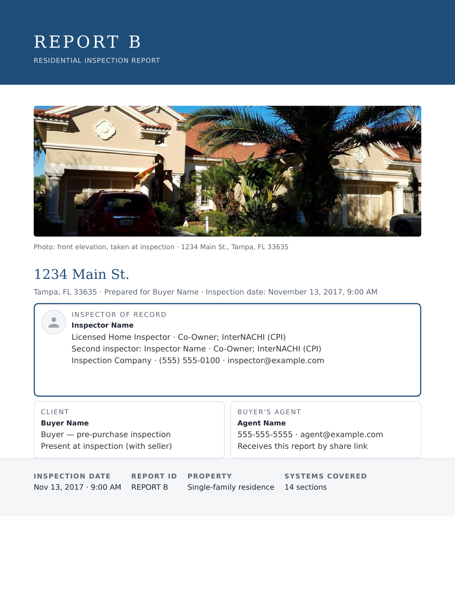
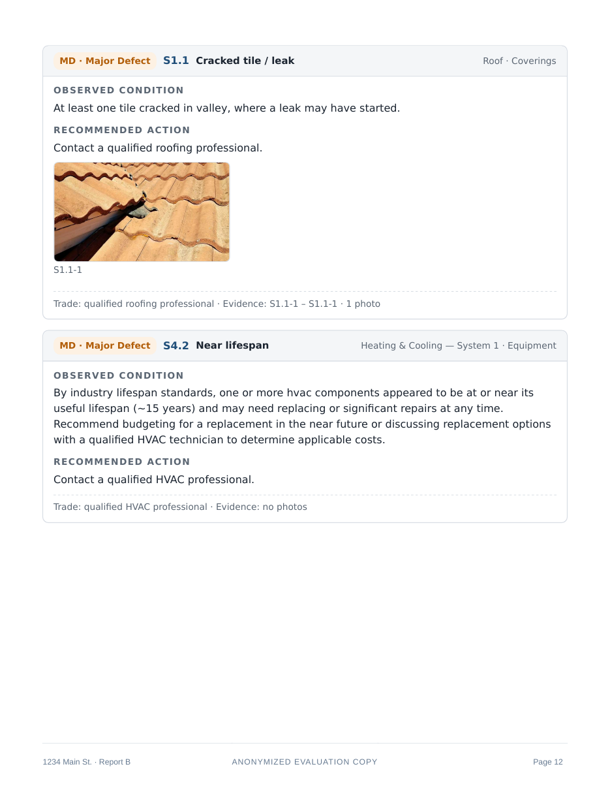

In this pilot, Spex Live is your voice co-inspector in the field: it takes your spoken notes, drafts findings for your approval, and helps prepare the report as you go. Spex answering email, keeping a schedule, and the rest of the office work are not part of this pilot.
The inspection is the part only you can do. The note-taking that comes with it — stopping to type, sorting photos, then rewriting it all into a report at night — is a second job you never applied for. Spex Live is the voice co-inspector who takes that job: you talk while you work, and the report is built as you go — so what is left at the end is a read-through, not a rewrite.
Free for 30 days. We move you over from your current software — you don’t fill out a thing.
The pilot is the first 25 inspectors — the same 25 who lock the founding price. We work inspectors in as they come.

“Water heater is past its service life — flagged under Plumbing, with your photos.” Nothing is filed until you say so.
ApproveMeasured against your own starting numbers — how long your reports take you today, written down with you when you start. If your reports don’t take less time on an inspection business Inspyx onboarded, you choose: six months free, or walk away.
The app and Spex Live, working in your real business, on real inspections.
How long a report takes you today is recorded on day one, so “faster” is a fact, not a feeling.
If the time doesn’t come down, the remedy below applies. In writing, before you start.
Get set up by our team and if your reports don’t take less time in your free trial, you get six months free — or walk away. Your choice. (Self-serve setup isn’t covered — we can only guarantee results we set up and verified ourselves.)
And if you’ve paid us and simply don’t like it, our money-back guarantee stands: ask, and we refund you.
Start with Inspyx, and we guarantee one thing:
How it’s measured. When you start, we sit down with you and write down how long your reports take you today — from the end of an inspection to a finished report your client can read. That’s your baseline, established with you when you’re onboarded. Everything is measured against your own numbers — not industry averages, not somebody else’s results.
How it starts. Your first 30 days are free — the full product, on your real inspections. One free period; nothing stacks on it.
If the results don’t come. If your reports don’t take less time, you get six months of Inspyx free — or you walk away. Your choice. That applies when Inspyx onboarded you — we can only guarantee a setup we did and verified ourselves.
If you’ve paid. If you’ve paid for Inspyx and you don’t like it, you get your money back. That’s the money-back guarantee, and it stands.
Say your reports take you 3 hours and 10 minutes today, written down with you on day one as your starting number. The clock starts when an inspection ends and stops when the finished report is ready to send. Over your free 30 days, your reports on Inspyx are timed the same way, against the same line.
If the time has not come down by the end of the trial on a business we onboarded, the remedy applies: six months free, or walk away — your choice. The figures in this example are illustrative; your own starting number is the one that counts, and it is written down with you before you start.
What this guarantee is not. It’s not a promise of a specific number of minutes, and it’s not a specific percentage — nobody honest can promise you that. The promise is improvement, measured on your own numbers, backed by the remedy above. In writing, before you start.
There are 25 because every move-in is done by hand, and every inspector’s starting numbers are written down with them, by a person, before their first inspection. That work is done properly for a small cohort or not at all — so the cohort is 25, and places go in the order applications are read.
When the 25 are claimed, the founding rate is gone — the price after is $84.95 a month.
No places claimed yet. Claims appear here as they happen — state and date only, never names.
One complete sequence, the way it runs in the field: you speak, Spex drafts, you stay in charge — including the moment Spex gets it wrong. The words are a specimen; the steps are the product’s. Nothing on this page is clickable, and nothing enters a report without the inspector’s approval.
“Water heater is past its service life. There is corrosion at the base. I have two photos — put it under Plumbing.”
That is the whole input. No typing, no form, no stopping the inspection.
“The water heater is past its service life, with corrosion at the base — flagged under Plumbing, with your photos.”
Your words, in plain language, in the right section — held as a proposal, not entered yet.
You look at the base again: “No — it is weeping at the seam. Mark it defective and recommend a licensed plumber now.”
Only the corrected finding goes in, with your photos beside it, in the section you named. Spex proposes — you decide, every time. The page it lands on is below: a real findings page from a sample report.

You bring the eyes and the judgment. Spex Live brings the notebook — and hands you back the evening the report used to eat.
Walk the property and say what you see. Spex listens, writes the finding in plain words, and puts it in the right section of the report — with the photos you took. You stay eyes-up on the house instead of heads-down in a phone. And nothing lands in the report until you approve it: Spex proposes, you decide. Always.
Every approved finding lands in the report the moment you say it — the right section, your photos beside it, in the clean spacing your clients actually read. By the last room, the report is nearly done. What’s left is a read-through, not a rewrite.
The report is written as you go, so the evening rewrite is gone. The workflow is built so a report can be ready to send the day of the inspection — and how long yours took is measured against the numbers we wrote down when you started.
I’m a truck driver.
More truck drivers are killed on the job than workers in any other occupation in America — year after year. I was looking to get out. Actively looking.
Home inspection found me. I’d always had an interest in it, and then I saw some YouTube videos that really resonated with me. So I did it properly: I spent months studying, got my home inspection license, spent a couple more months furthering my education — more videos, more learning — and gathered all the tools I needed to start my trade.
And then I never really got into it. I felt overwhelmed — by the complexity of it, by the responsibility of it, and most of all by the software. Spectora was too expensive and too difficult to learn. So I kind of gave up, and I stuck with truck driving.
So I built the software myself — for me. And it got me inspecting: I run inspections with Inspyx now — part-time, on my own terms — the start the other software never gave me. And now I want to share it with the rest of the world — for the home inspectors standing exactly where I was standing: licensed, equipped, ready, and stopped by tools that were supposed to help them.
— Moises Avila, part-time home inspector and founder of Inspyx
We’re opening Inspyx to a first group of 25 inspectors and working alongside them personally. We work inspectors in as they come — a few at a time, because the move-in is hands-on. Run your real inspections with the app and Spex Live, tell us honestly what works and what doesn’t, and help shape the tool inspectors will switch to.
Less time to a finished report. Guaranteed — measured against your own starting numbers, or six months free.
Get early access